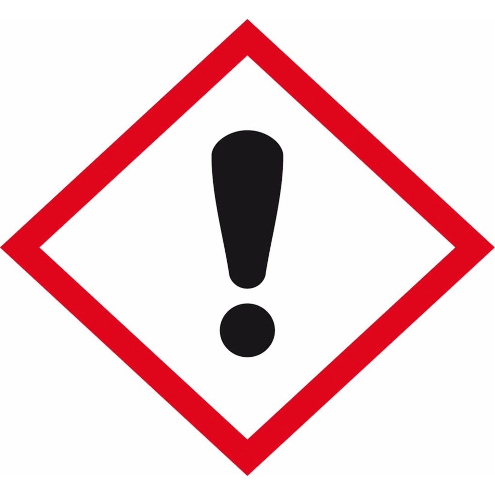

Research Question
Which type of cup will warm a hot cup of tap water for the longest duration: paper, plastic, styrofoam, ceramic, or glass?
Equipment
- Aluminum Foil: Used as a lid to equalize air loss across cups.
- Thermometer: Measured temperature in each cup accurately.
- Measuring Cylinder: Measured 100ml of water per cup.
- Retort Stand: Held thermometer in place safely.
- Funnel: Helped pour water into cups with aluminum lids.
- Timer: Tracked temperature drop from 65°C to 39°C.
Variables
Independent Variable: Type of cup (paper, plastic, styrofoam, ceramic, glass)
Dependent Variable: Time taken to cool to 39°C
| What [CV]s will be controlled? | How? | Why? |
|---|---|---|
| Room Temperature | Keep room conditions constant (e.g., windows, heater). | Ensures cooling is only affected by cup type. |
| Water Temperature | Use a thermometer to ensure equal starting temperature. | Removes bias from temperature differences. |
| Amount of Water | Use measuring cylinder to pour 100ml per cup. | More water holds heat longer, so standardizing is critical. |
| Type of Water | Use only tap water. | Ensures no additives like salt change boiling points. |
Risk Assessment
| Risk | Precautionary Measure | Symbol |
|---|---|---|
| The boiling water could cause serious burns if spilled on our team member's hands while pouring it into the cups for the experiment. | Wear precautionary equipment like glasses and lab coats at all times because even after the water is poured into the cup, the retort stand could fall and the burns could still happen. | .jpg) |
| The thermometer / glass / ceramic cup could break and cause injury. | Use a retort stand and avoid putting materials that can break near the edge. |  |
| Although this has such a small chance of happening, our team members could eat / get harmful substances on their skin from the materials if they are easily breakable, such as small flakes of the styrofoam being consumed. | We will thoroughly warn our team members and we won't use any materials that have clear signs of cracks or breaks in them or are incredibly dirty: one of our styrofoam cups filled with pink liquid when we filled it so this actually happened. | |